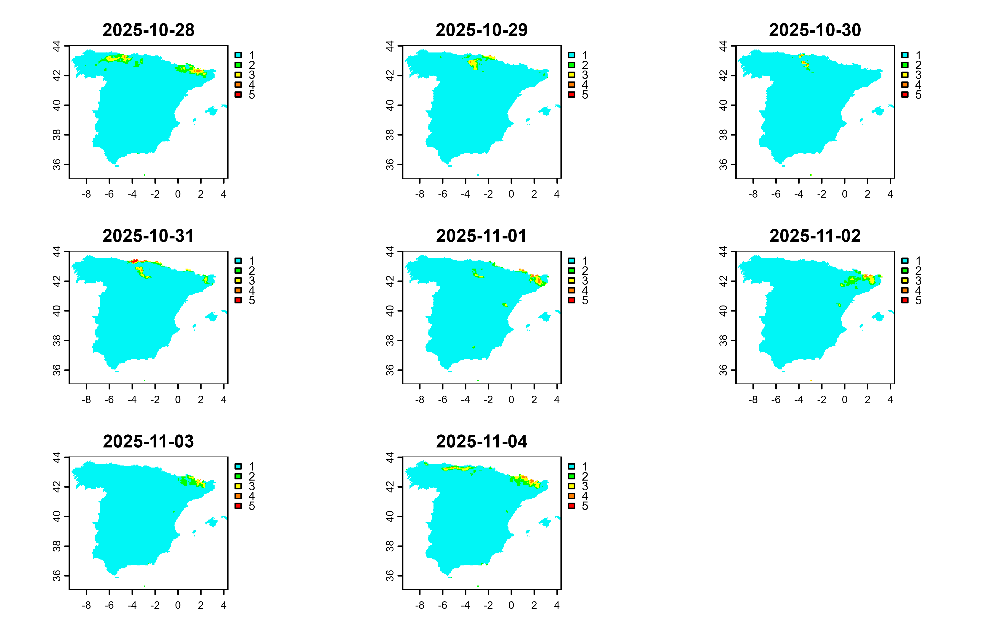
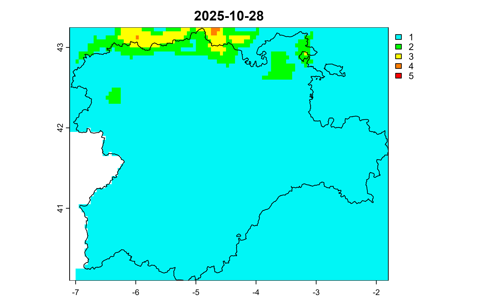

Get a SpatRaster as provided by terra with the
daily meteorological risk level for wildfires.
Usage
aemet_forecast_fires(
area = c("p", "c"),
verbose = FALSE,
extract_metadata = FALSE
)Arguments
- area
The area, being:
"p"for Mainland Spain and Balearic Islands."c"for Canary Islands.
- verbose
Logical
TRUE/FALSE. Provides information about the flow of information between the client and server.- extract_metadata
Logical
TRUE/FALSE. OnTRUEthe output is a tibble with the description of the fields. See alsoget_metadata_aemet().
Value
A tibble or a SpatRaster
object.
Details
The SpatRaster provides 5 (factor())levels with the following meaning:
"1": Low risk."2": Moderate risk."3": High risk."4": Very high risk."5": Extreme risk.
The resulting object has several layers, each one representing the forecast
for the upcoming 7 days. It also has additional attributes provided by the
terra package, such as terra::time() and terra::coltab().
See also
Other aemet_api_data:
aemet_alert_zones(),
aemet_alerts(),
aemet_beaches(),
aemet_daily_clim(),
aemet_extremes_clim(),
aemet_forecast_beaches(),
aemet_forecast_daily(),
aemet_last_obs(),
aemet_monthly,
aemet_normal,
aemet_stations()
Other forecasts:
aemet_forecast_beaches(),
aemet_forecast_daily(),
aemet_forecast_tidy()
Examples
aemet_forecast_fires(extract_metadata = TRUE)
#> # A tibble: 1 × 6
#> unidad_generadora descripción periodicidad formato copyright notaLegal
#> <chr> <chr> <chr> <chr> <chr> <chr>
#> 1 Servicio de Aplicaciones… Mapa de ni… diario image/… © AEMET.… https://…
# Extract alerts
alerts <- aemet_forecast_fires()
alerts
#> class : SpatRaster
#> size : 180, 277, 8 (nrow, ncol, nlyr)
#> resolution : 0.05, 0.05 (x, y)
#> extent : -9.5, 4.35, 35.05, 44.05 (xmin, xmax, ymin, ymax)
#> coord. ref. : lon/lat WGS 84 (EPSG:4326)
#> source(s) : memory
#> color table : 1, 2, 3, 4, 5, 6, 7, 8
#> names : 2026-02-17, 2026-02-18, 2026-02-19, 2026-02-20, 2026-02-21, 2026-02-22, ...
#> min values : 1, 1, 1, 1, 1, 1, ...
#> max values : 2, 3, 5, 4, 2, 3, ...
#> time (days) : 2026-02-17 to 2026-02-24 (8 steps)
# Nice plotting with terra
library(terra)
#> terra 1.8.93
plot(alerts, all_levels = TRUE)

# Zoom in an area
cyl <- mapSpain::esp_get_ccaa("Castilla y Leon", epsg = 4326)
# SpatVector
cyl <- vect(cyl)
fires_cyl <- crop(alerts, cyl)
fires_cyl <- crop(alerts, cyl)
title <- names(fires_cyl)[1]
plot(fires_cyl[[1]], main = title, all_levels = TRUE)
plot(cyl, add = TRUE)
